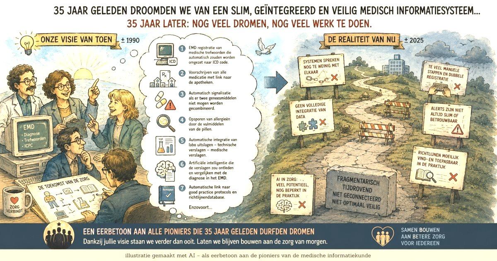

Wie documenten en presentaties uit de beginjaren van de medische informatica opnieuw leest, merkt hoe vooruitziend vele ideeën waren. Men sprak toen al over gestructureerde diagnoseregistratie, automatische codering van medische gegevens, elektronische voorschriften, medicatiebewaking, integratie van laboratoriumresultaten, koppelingen met richtlijnen en zelfs systemen die medische teksten zouden analyseren en interpreteren.
Veel van deze concepten worden vandaag voorgesteld als innovatieve ontwikkelingen. In werkelijkheid maakten ze reeds deel uit van de toekomstvisie van talrijke artsen, informatici en onderzoekers die tientallen jaren geleden de eerste medische softwaresystemen ontwikkelden.
Het zou onjuist zijn te stellen dat er geen vooruitgang werd geboekt. De digitalisering van administratieve processen heeft de gezondheidszorg grondig veranderd. Elektronische voorschriften zijn gemeengoed geworden. Digitale communicatie met ziekenfondsen, overheden en andere zorgverleners verloopt efficiënter dan ooit tevoren. Ook de elektronische uitwisseling van medische documenten is sterk verbeterd.
Op administratief vlak heeft de medische informatica zonder twijfel een belangrijke meerwaarde geleverd.
De oorspronkelijke ambitie lag echter niet in administratie, maar in medische ondersteuning. Juist op dat vlak blijft de vooruitgang opvallend beperkt.
Diagnosen worden nog steeds vaak geregistreerd als vrije tekst in plaats van als gestructureerde gegevens. Veel systemen kunnen medische informatie opslaan, maar begrijpen de inhoud ervan nauwelijks. Gegevens bevinden zich vaak in afzonderlijke toepassingen die onvoldoende met elkaar communiceren. Zorgverleners worden nog steeds geconfronteerd met dubbele registraties, onvolledige informatie en een gebrek aan semantische integratie.
Ook geavanceerde medicatiebewaking blijft vaak beperkt tot eenvoudige interactiewaarschuwingen. Allergieën, intoleranties en contextuele risico's worden slechts gedeeltelijk meegenomen. Veel van de intelligente ondersteuning die decennia geleden werd voorspeld, is nog steeds niet standaard beschikbaar in de dagelijkse praktijk.
De recente opkomst van artificiële intelligentie maakt deze situatie des te opvallender. Moderne AI-systemen zijn vandaag in staat medische verslagen te analyseren, samenvattingen te maken, diagnosestructuren te herkennen en richtlijnen contextueel toe te passen.
Toch botsen deze technologieën vaak op een fundamenteel probleem: de onderliggende medische gegevens zijn onvoldoende gestandaardiseerd. Veel elektronische medische dossiers bevatten nog steeds grote hoeveelheden vrije tekst en fragmentarische informatie. Daardoor blijft een aanzienlijk deel van het potentieel van artificiële intelligentie onbenut.
Men zou kunnen stellen dat de technologie sneller geëvolueerd is dan de informatiearchitectuur waarop zij moet steunen.
De beperkte realisatie van de oorspronkelijke visie mag niet uitsluitend aan technische beperkingen worden toegeschreven. Vaak vormden organisatorische, juridische en beleidsmatige factoren een grotere uitdaging dan de technologie zelf.
Standaardisatie vergt samenwerking. Interoperabiliteit vereist afspraken tussen softwareleveranciers, zorginstellingen en overheden. Bovendien moeten nieuwe systemen aansluiten bij de dagelijkse realiteit van zorgverleners, die terecht weinig enthousiasme tonen voor extra registratielast.
De geschiedenis van de medische informatica toont aan dat succesvolle innovatie niet enkel afhangt van wat technisch mogelijk is, maar ook van wat organisatorisch haalbaar wordt gemaakt.
Deze terugblik is geen uiting van ontgoocheling. De gezondheidszorg van vandaag is onmiskenbaar digitaler dan die van 35 jaar geleden. Tegelijk blijft het opvallend hoeveel elementen van de oorspronkelijke toekomstvisie nog steeds op realisatie wachten.
Veel van de grote uitdagingen die destijds werden beschreven, zijn vandaag nog altijd actueel: gestructureerde diagnoseregistratie, betekenisvolle interoperabiliteit, intelligente beslissingsondersteuning, contextuele richtlijnen en semantische verwerking van medische gegevens.
Misschien bevinden we ons vandaag dichter bij de oorspronkelijke droom dan ooit tevoren. Niet omdat de problemen verdwenen zijn, maar omdat de technologische mogelijkheden eindelijk beschikbaar zijn om ze daadwerkelijk aan te pakken.
De uitdaging voor de komende jaren bestaat erin de focus opnieuw te verleggen van administratie naar medische ondersteuning. Niet méér gegevens verzamelen maar betere informatie creëren. Niet méér schermen toevoegen maar zorgverleners helpen betere beslissingen te nemen.
Dat was de ambitie van vele pioniers meer dan drie decennia geleden. Het blijft ook vandaag een bijzonder actuele opdracht.
